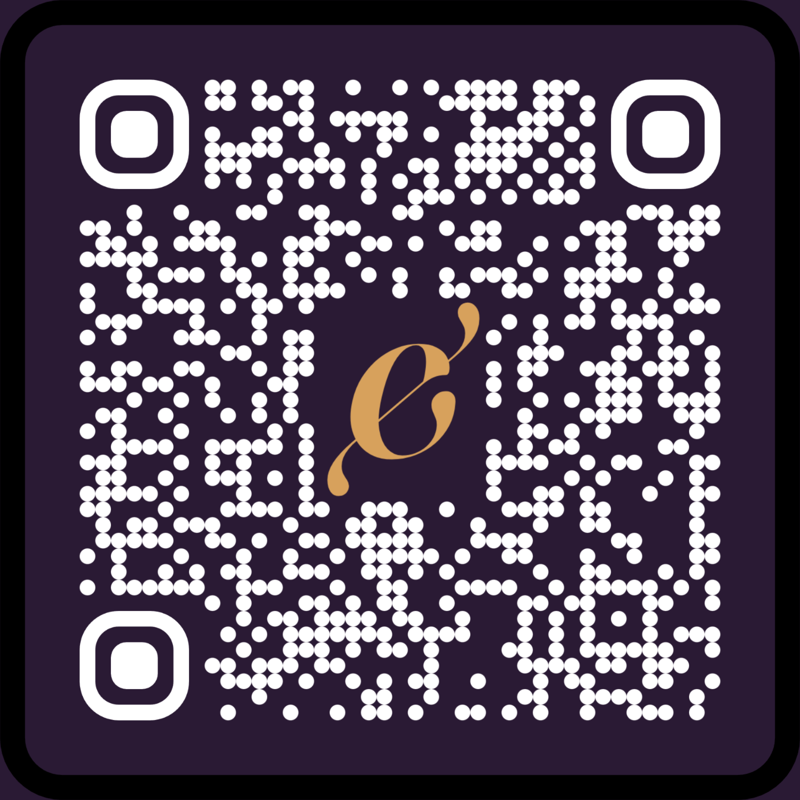

Listen for your signal. Walk. Relay.
Split into two groups: alpha and beta. Each holds a map meant for the other team's eyes, not their own.
You are in ALPHA
Talk over radio. Describe what you see — alpha guides beta, beta guides alpha. Neither of you can find your own way alone.

Group BetaYou have both completed your routes. Regroup and find the next stop. Enter what you find below together.